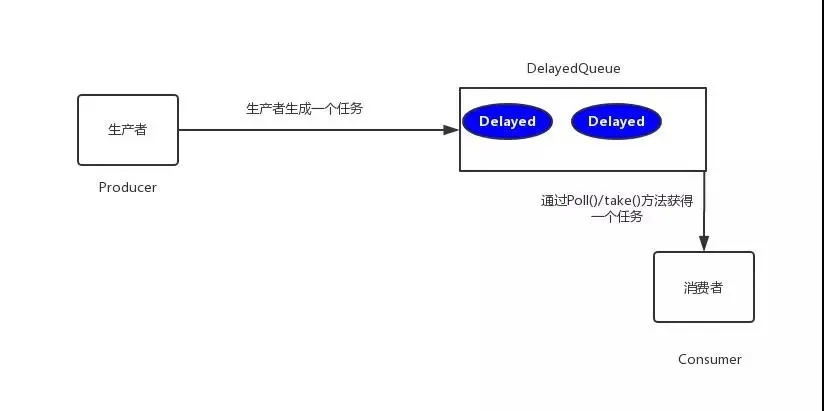
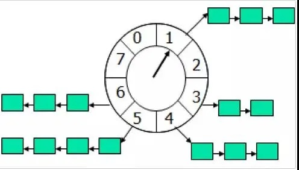

在开发中，往往会遇到一些关于延时任务的需求。例如
生成订单30分钟未支付，则自动取消
生成订单60秒后,给用户发短信
对上述的任务，我们给一个专业的名字来形容，那就是延时任务。那么这里就会产生一个问题，这个延时任务和定时任务的区别究竟在哪里呢？一共有如下几点区别
定时任务有明确的触发时间，延时任务没有
定时任务有执行周期，而延时任务在某事件触发后一段时间内执行，没有执行周期
定时任务一般执行的是批处理操作是多个任务，而延时任务一般是单个任务
下面，我们以判断订单是否超时为例，进行方案分析
方案分析
(1)数据库轮询
思路
该方案通常是在小型项目中使用，即通过一个线程定时的去扫描数据库，通过订单时间来判断是否有超时的订单，然后进行update或delete等操作
代码
|
|
优缺点
优点:简单易行，支持集群操作
缺点:
- 对服务器内存消耗大
- 存在延迟，比如你每隔3分钟扫描一次，那最坏的延迟时间就是3分钟
- 假设你的订单有几千万条，每隔几分钟这样扫描一次，数据库损耗极大
(2)JDK的延迟队列
思路
该方案是利用JDK自带的DelayQueue来实现，这是一个无界阻塞队列，该队列只有在延迟期满的时候才能从中获取元素，放入DelayQueue中的对象，是必须实现Delayed接口的。
DelayedQueue实现工作流程如下图所示

其中Poll():获取并移除队列的超时元素，没有则返回空
take():获取并移除队列的超时元素，如果没有则wait当前线程，直到有元素满足超时条件，返回结果。
实现
|
|
输出
|
|
可以看到都是延迟3秒，订单被删除
优缺点
优点:效率高,任务触发时间延迟低。
缺点:
(1)服务器重启后，数据全部消失，怕宕机
(2)集群扩展相当麻烦
(3)因为内存条件限制的原因，比如下单未付款的订单数太多，那么很容易就出现OOM异常
(4)代码复杂度较高
(3)时间轮算法
思路
先上一张时间轮的图(这图到处都是啦)

时间轮算法可以类比于时钟，如上图箭头（指针）按某一个方向按固定频率轮动，每一次跳动称为一个 tick。这样可以看出定时轮由个3个重要的属性参数，ticksPerWheel（一轮的tick数），tickDuration（一个tick的持续时间）以及 timeUnit（时间单位），例如当ticksPerWheel=60，tickDuration=1，timeUnit=秒，这就和现实中的始终的秒针走动完全类似了。
如果当前指针指在1上面，我有一个任务需要4秒以后执行，那么这个执行的线程回调或者消息将会被放在5上。那如果需要在20秒之后执行怎么办，由于这个环形结构槽数只到8，如果要20秒，指针需要多转2圈。位置是在2圈之后的5上面（20 % 8 + 1）
实现
我们用Netty的HashedWheelTimer来实现
优缺点
优点:效率高,任务触发时间延迟时间比delayQueue低，代码复杂度比delayQueue低。
缺点:
(1)服务器重启后，数据全部消失，怕宕机
(2)集群扩展相当麻烦
(3)因为内存条件限制的原因，比如下单未付款的订单数太多，那么很容易就出现OOM异常
(4)使用消息队列
我们可以采用rabbitMQ的延时队列。RabbitMQ具有以下两个特性，可以实现延迟队列
RabbitMQ可以针对Queue和Message设置 x-message-tt，来控制消息的生存时间，如果超时，则消息变为dead letter
lRabbitMQ的Queue可以配置x-dead-letter-exchange 和x-dead-letter-routing-key（可选）两个参数，用来控制队列内出现了deadletter，则按照这两个参数重新路由。结合以上两个特性，就可以模拟出延迟消息的功能。